| # | Qué | Antes | Después | Capturas (antes · después) |
|---|---|---|---|---|
| 1 | Aviso de cerrado (hoja de fechas) | Decía «Hemos preparado tu ruta para que disfrutes de todo lo que está abierto…»: parecía que habíamos quitado los museos. | Dice lo que se ha hecho de verdad: «Los domingos cierran los Museos Vaticanos. Por eso los hemos puesto el sábado 5, para que los disfrutes con calma.» (el día real), o, si no cabe en ningún día: «Ese día los Museos Vaticanos están cerrados, así que no entran en tu ruta. Si cambias las fechas, te los ponemos.» Vale para todos los sitios y destinos. | 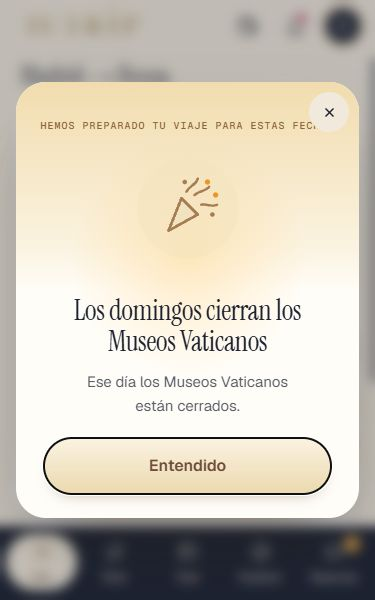 |
| 1b | Título «Hemos preparado tu viaje para estas fechas» | Se cortaba por debajo de la X en 320, 375 y 375×600. | Va en dos líneas, con hueco para la X: no choca en 320, 375, 390 ni 430. | |
| 2 | DÍAS: el asa para mover | A la derecha, junto al «···». | A la izquierda, asomando sobre la franja de color de cada día, como antes de la V27. | 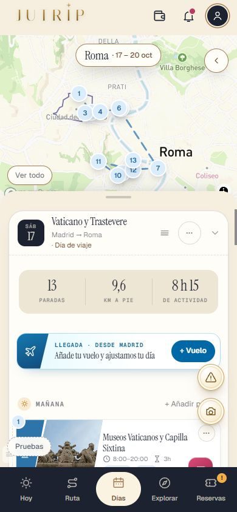 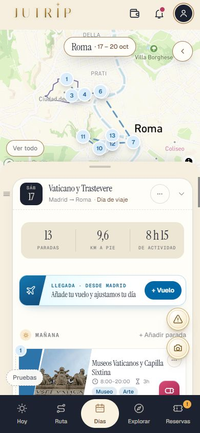 |
| 3a | «Crear mi propio día»: el mapa | Se quedaba donde lo dejó el viaje anterior (Roma después de Lanzarote enseñaba Lanzarote). | Se abre siempre en el destino del viaje. Lo mismo en Explorar y en añadir parada (comparten mapa). | 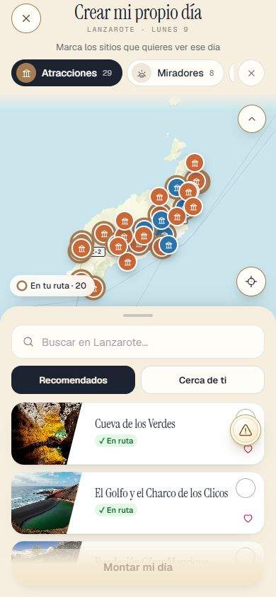 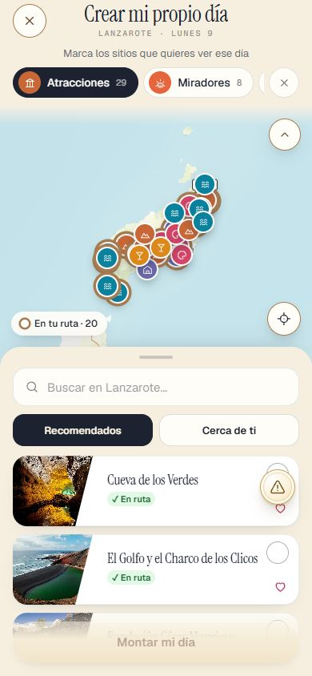 |
| 3b | «Crear mi propio día»: comida y cena | Ponía comida y cena solas. | No las pone (las añade quien quiera desde Explorar). Los días curados no cambian. | |
| 3c | Excursión de medio día | «Vuelves a Roma a las 11:00. La tarde es para ti.» | «…La tarde es para ti: añade los sitios que quieras con "Añadir lugares".» | |
| 4 | Explorar: icono y color del filtro en el mapa | «Playas y charcos» tenía su ola en el filtro pero en el mapa salía el edificio de monumento. | Cada punto lleva el icono y el color de su filtro (una sola fuente para el filtro y el mapa), en todos los destinos. | 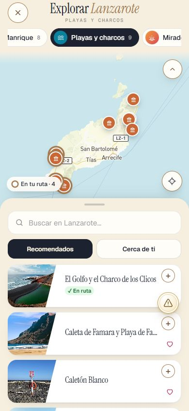 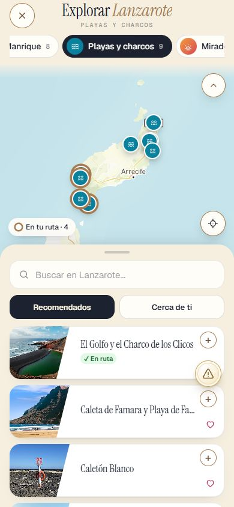 |
| 4b | Sorpresas por reclamar | La X salía cortada arriba y muy sutil. | X entera, con contraste, en su sitio, y el título con hueco para ella. | 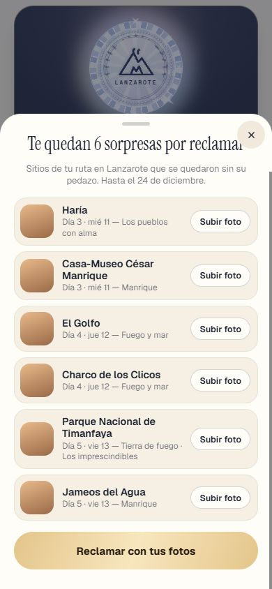 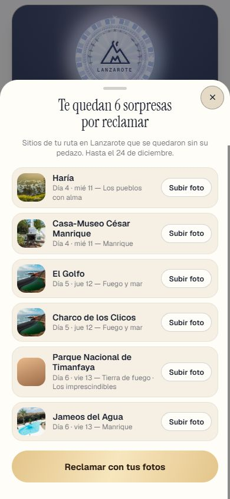 |
| 4b | Resumen del viaje: logros de viajero | Al tocar un logro de viajero no pasaba nada. | Se abre su ficha (la misma pieza que la pestaña Logros): dibujo, grupo, nombre y frase, «Conseguido el…» y [Compartir]. | 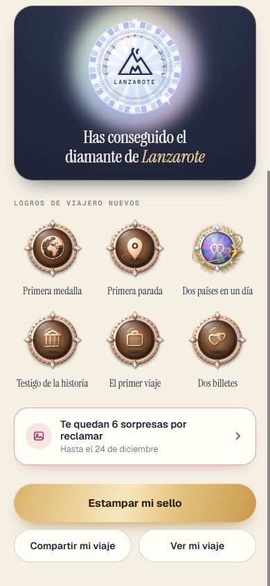 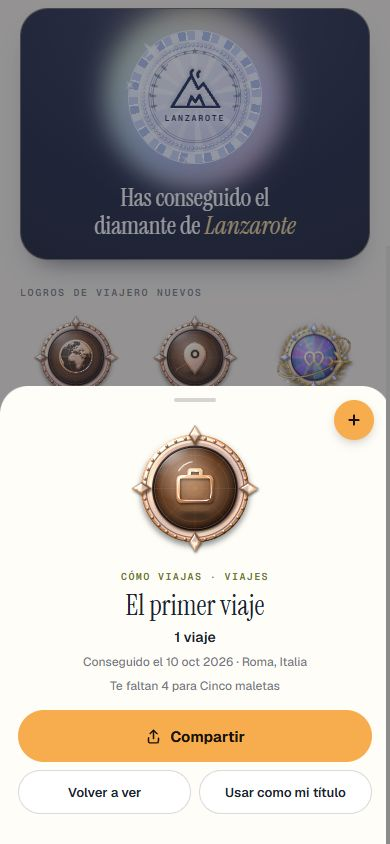 |
supabase/migrations/0092_route_original.sql) y luego pasa docs/dias/COMPROBAR_0092.sql: debe salir una fila con todo = true.